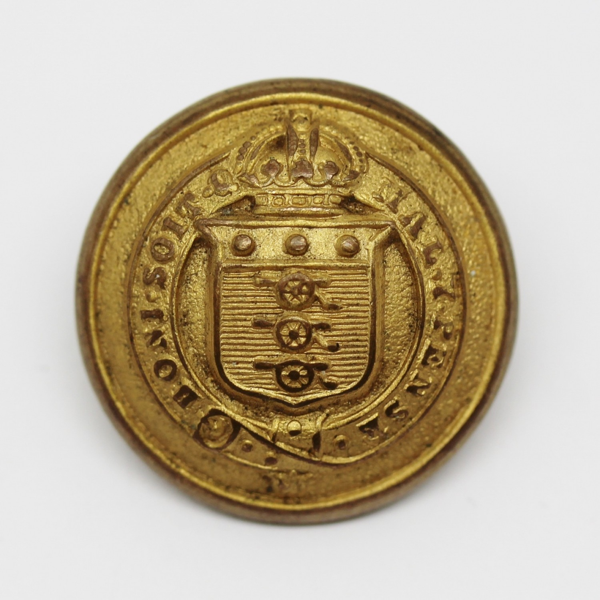

Pre-independence
The history of ordnance in India dates back to the 15th century. The early ordnance stores in the Indian sub-continent were established by the British East India Company for their logistical requirements. Following the military expansion of the company, the needs of military troops increased which in turn required the support of an ordnance department. By accepting the report of then Commander-in-Chief of the Bengal Army, Lieutenant General Sir John Clavering, the Board of Ordnance was established on April 8, 1775. This is considered to be the first step towards the recognition of the Army Ordnance Corps (AOC). Initially the board was put under the control of the Bengal Presidency.
The increasing influence of the British crown over the sub-continent, the number of British troops increased significantly. In 1874, a "Special Ordnance Commission" was appointed by the government to prepare a report on the establishment of a new ordnance system at the national level. The report which was submitted on 7 April 1875 recommended a centralized system and the establishment of ordnance factories in the country. A report by the Army in India Commission, which was constituted in May 1879 by Lord Lytton, recommended the establishment of a centralized all-India organisation, headed by a Director General of Ordnance. On 1 April 1884, the Ordnance Department of India came into existence. The Ordnance's three Presidencies of the British Raj were integrated into one. An Inspector General of Ordnance was appointed to each Presidency and was responsible to the Director General at the national level. Following the Partition of Bengal (1905), the Ordnance was split into two, each with an Inspector General. Several reorganizations took place during the tenure of Lord Kitchener as the Commander-in-Chief of India.
Overruling the report of the Esher Committee of 1919 recommended that a civilian member be in charge of civil business. A military officer was put in-charge of manufacture and production as Master General of Supply. Later in 1929, the office of Master of General of Supply was rechristened Master General of Ordnance.
With of start of the Second World War in September 1939, the AOC began a major expansion that continued to the end of the war in 1945. The number of installations rose from 10 to 77 in the span of six years. On 1 May 1943, the Indian Electrical and Mechanical Engineers (IEME) was separated from Indian Armed Ordnance Corps.
Post-independence
After India became republic on 25 January 1950, the corps was rechristened as the Army Ordnance Corps dropping the prefix Indian.
